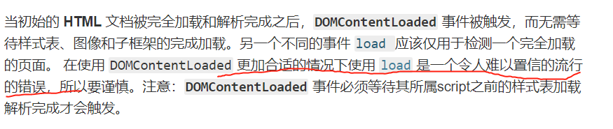

mdn 文档中关于 dom 的一些摘抄
pubdate:2019-08-30 10:06:36
tags:mdn

有些时候应该使用 DOMContentLoaded 而非 load
DOMContentLoaded
nodeList
和
HTMLCollection
，有点惭愧今天才了解到 HTMLCollection，感觉这个概念挺好的，他和 nodeList 的差距在于 nodeList 是返回你通过规则获取的那一刻符合规则的元素，而 HTMLCollection 中时刻都是符合规则的元素，例如 document.forms 始终是返回文档中所有的表单。